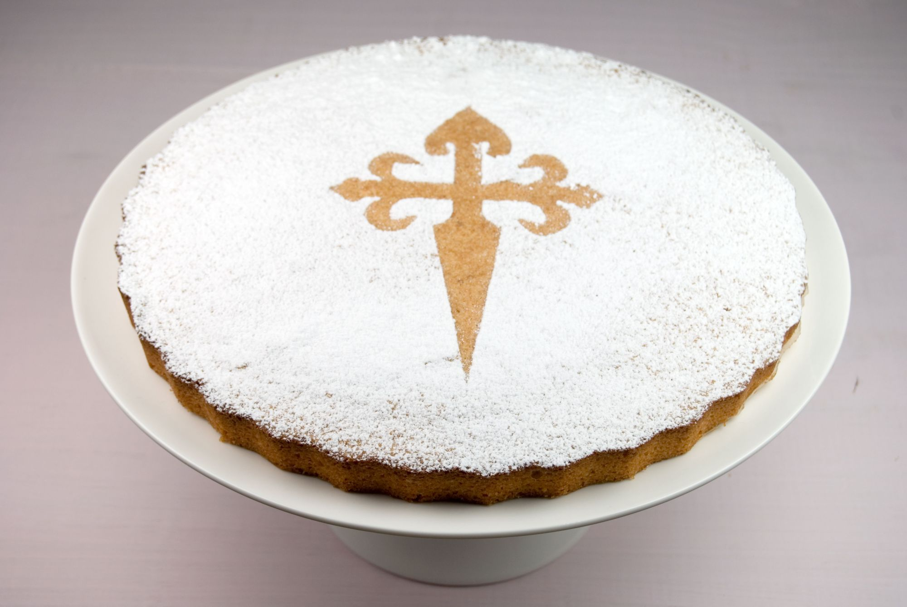

Receta de la Tarta de Santiago

Ingredientes:
- 200 g de almendras molidas
- 200 g de azúcar
- 4 huevos
- La ralladura de 1 limón
- Azúcar glas para decorar
Tiempos:
- Preparación: 30 minutos
- Cocinar: 1 hora
- Total:1:30 hora
Pasos:
- Preparar un molde redondo para horno y precalentar el horno a 180°C.
- En un bol, mezclar las almendras molidas y el azúcar.
- En otro bol, batir los huevos hasta que estén espumosos.
- Añadir la ralladura de limón a los huevos batidos.
- Incorporar la mezcla de almendras y azúcar a los huevos batidos y mez
- Verter la masa en el molde y alisar la superficie.
- Hornear durante 30-35 minutos, o hasta que la tarta esté dorada y firme al tacto.
- Dejar enfriar la tarta antes de desmoldarla y espolvorearla con azúcar glas antes de servirla.